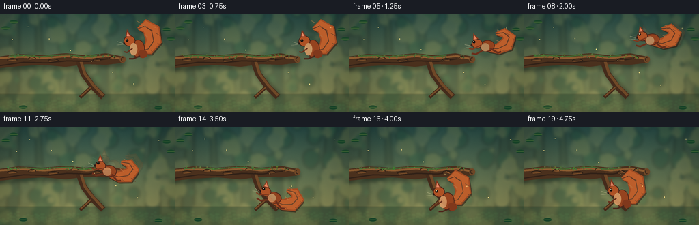
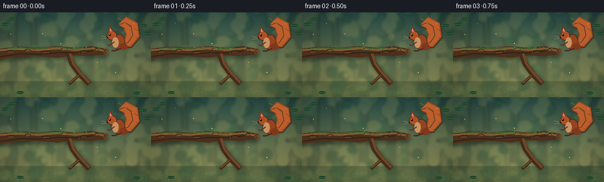

CODING AGENTS AS PIXEL WORLD MODELS
traex/GPT-5.6-Sol · dynamic_spatial_relationship_0022
点击播放 · 原生 RGB 像素
逐轮保存的候选
回放视频、检查图与代码变化。
每份候选均可单独播放。实际图片检查记录在下方工具轨迹中。
候选 01播放与检查图
点击播放 · 原生 RGB 像素


展开代码变化
--- 上一保存版本
+++ 本次保存版本
@@ -0,0 +1,224 @@
+from pathlib import Path
+import math
+import numpy as np
+from PIL import Image, ImageDraw, ImageFilter
+import artifact_io
+
+W, H, N, S = 256, 144, 20, 4
+ROOT = Path(__file__).resolve().parent
+rng = np.random.default_rng(2202)
+
+def q(v): return int(round(v*S))
+def box(x0,y0,x1,y1): return (q(x0),q(y0),q(x1),q(y1))
+def pts(seq): return [(q(x),q(y)) for x,y in seq]
+
+def background():
+ # Soft, deep woodland backdrop with a sunlit clearing behind the action.
+ yy = np.linspace(0, 1, H*S)[:,None,None]
+ top = np.array([39,76,71.], float)[None,None,:]
+ bot = np.array([154,153,92.], float)[None,None,:]
+ arr = top*(1-yy) + bot*yy
+ arr = np.repeat(arr, W*S, axis=1)
+ # slight vignette and fine, filmic variation
+ X,Y = np.meshgrid(np.linspace(-1,1,W*S), np.linspace(-1,1,H*S))
+ vign = np.clip(1 - .22*(X*X + .45*Y*Y), .72, 1)[...,None]
+ arr *= vign
+ noise = rng.normal(0, 1.2, arr.shape[:2])[...,None]
+ arr = np.clip(arr + noise, 0, 255).astype('uint8')
+ im = Image.fromarray(arr, 'RGB').convert('RGBA')
+
+ far = Image.new('RGBA', im.size, (0,0,0,0)); d=ImageDraw.Draw(far)
+ # Distant pale trunks
+ for x,wid,lean,col in [(18,10,5,(58,75,55,105)),(60,7,-4,(55,71,52,100)),
+ (103,8,4,(67,82,56,85)),(153,9,-6,(47,69,54,95)),
+ (223,12,5,(43,65,52,120))]:
+ d.polygon(pts([(x-wid,144),(x+wid,144),(x+wid/2+lean,0),(x-wid/2+lean,0)]), fill=col)
+ # layered bokeh foliage
+ colors=[(29,68,50,90),(45,91,61,85),(89,116,67,65),(173,166,87,48),(214,193,112,30)]
+ for i in range(125):
+ r=float(rng.uniform(3,13)); x=float(rng.uniform(-10,266)); y=float(rng.uniform(-8,142))
+ c=colors[int(rng.integers(len(colors)))]
+ d.ellipse(box(x-r,y-r,x+r,y+r), fill=c)
+ far=far.filter(ImageFilter.GaussianBlur(q(2.4)))
+ im=Image.alpha_composite(im,far)
+
+ # Ground glow and softly blurred fern silhouettes.
+ low=Image.new('RGBA',im.size,(0,0,0,0)); dl=ImageDraw.Draw(low)
+ dl.rectangle(box(0,117,256,144),fill=(28,55,39,95))
+ for x in np.linspace(4,250,28):
+ h=float(rng.uniform(10,28)); sway=float(rng.uniform(-5,5))
+ dl.line(pts([(x,144),(x+sway,144-h)]),fill=(24,58,39,110),width=q(.8))
+ for k in range(3,9):
+ t=k/10; xx=x+sway*t; yy0=144-h*t
+ side=-1 if k%2 else 1
+
+ ex=xx+side*rng.uniform(3,7)
+ dl.ellipse(box(min(xx,ex),yy0-1,max(xx,ex),yy0+2),fill=(31,73,46,90))
+ low=low.filter(ImageFilter.GaussianBlur(q(.7)))
+ return Image.alpha_composite(im,low)
+
+def draw_branch(im):
+ # The single central branch is deliberately isolated and unmistakable.
+ shadow=Image.new('RGBA',im.size,(0,0,0,0)); ds=ImageDraw.Draw(shadow)
+ main=[(-10,63),(26,58),(62,60),(96,57),(127,60),(155,57),(181,62),
+ (181,71),(155,74),(127,73),(96,77),(63,74),(27,76),(-10,80)]
+ ds.polygon(pts([(x+2,y+4) for x,y in main]),fill=(15,24,18,115))
+ ds.line(pts([(116,70),(124,89),(137,106),(151,120)]),fill=(12,20,15,110),width=q(10))
+ shadow=shadow.filter(ImageFilter.GaussianBlur(q(3)))
+ im.alpha_composite(shadow)
+ d=ImageDraw.Draw(im)
+ d.polygon(pts(main),fill=(74,48,29,255))
+ # lower offshoot: destination is visibly beneath the main limb
+ d.line(pts([(115,68),(122,87),(135,105),(151,121)]),fill=(68,43,27,255),width=q(9),joint='curve')
+ d.line(pts([(118,68),(124,87),(137,104),(151,119)]),fill=(111,72,39,255),width=q(4),joint='curve')
+ d.line(pts([(133,107),(117,122)]),fill=(66,41,25,255),width=q(5))
+ d.line(pts([(133,107),(118,120)]),fill=(117,75,39,255),width=q(2))
+ # bark lighting and seams
+ d.line(pts([(-2,64),(31,62),(65,64),(98,61),(127,64),(157,61),(177,65)]),fill=(139,91,48,255),width=q(3))
+ d.line(pts([(0,75),(35,70),(69,71),(99,68),(129,69),(158,65)]),fill=(49,33,23,190),width=q(2))
+ for x,y,ln in [(18,68,16),(47,66,12),(78,69,17),(109,64,12),(142,68,13),(164,65,8)]:
+ d.arc(box(x-ln/2,y-4,x+ln/2,y+4),190,345,fill=(41,29,20,190),width=q(1))
+ d.line(pts([(x-ln/3,y),(x+ln/3,y-1)]),fill=(169,107,53,120),width=q(.7))
+ # moss establishes top surface and adds tactile detail
+ d.line(pts([(14,61),(37,60),(58,62),(78,60),(101,59),(120,62),(142,60)]),fill=(67,99,48,255),width=q(2))
+ for i in range(45):
+ x=float(rng.uniform(7,170)); y=float(rng.uniform(58.5,63.5))
+ r=float(rng.uniform(.4,1.3))
+ d.ellipse(box(x-r,y-r,x+r,y+r),fill=(rng.integers(60,100),rng.integers(89,126),rng.integers(42,64),rng.integers(130,230)))
+ # cut end at right, useful spatial landmark
+ d.ellipse(box(175,61,184,71),fill=(109,70,38,255))
+ d.arc(box(177,63,182,69),60,300,fill=(49,34,24,230),width=q(1))
+
+def tail_polygon(spine, widths):
+ # Polygon around a curved centerline.
+ left=[]; right=[]
+ for i,(x,y) in enumerate(spine):
+ if i==0: dx,dy=spine[1][0]-x,spine[1][1]-y
+ elif i==len(spine)-1: dx,dy=x-spine[i-1][0],y-spine[i-1][1]
+ else: dx,dy=spine[i+1][0]-spine[i-1][0],spine[i+1][1]-spine[i-1][1]
+ norm=max(.01,math.hypot(dx,dy)); nx,ny=-dy/norm,dx/norm; w=widths[i]
+ left.append((x+nx*w,y+ny*w)); right.append((x-nx*w,y-ny*w))
+ return left+right[::-1]
+
+def squirrel_sprite(pose='sit', bob=0.0):
+ size=104
+ sp=Image.new('RGBA',(q(size),q(size)),(0,0,0,0)); d=ImageDraw.Draw(sp)
+ cx=51; cy=49
+ def E(bb,fill,outline=None,width=1): d.ellipse(box(*bb),fill=fill,outline=outline,width=q(width) if outline else 1)
+ def P(pp,fill): d.polygon(pts(pp),fill=fill)
+ def L(pp,fill,width): d.line(pts(pp),fill=fill,width=q(width),joint='curve')
+ if pose=='sit' or pose=='land':
+ spine=[(cx+8,cy+8),(cx+22,cy+5),(cx+30,cy-7),(cx+27,cy-22),(cx+17,cy-29),(cx+7,cy-25)]
+ widths=[4,9,12,13,10,2]
+ elif pose=='crouch':
+ spine=[(cx+8,cy+8),(cx+23,cy+7),(cx+32,cy-3),(cx+31,cy-17),(cx+19,cy-25),(cx+8,cy-22)]
+ widths=[4,8,11,12,9,2]
+ else:
+ spine=[(cx+9,cy+5),(cx+24,cy+7),(cx+37,cy+3),(cx+43,cy-7),(cx+36,cy-15),(cx+24,cy-15)]
+ widths=[4,8,11,10,7,2]
+ # tail shadow and rich russet fill
+ poly=tail_polygon(spine,widths)
+ P([(x+1.4,y+1.7) for x,y in poly],(50,27,18,160))
+ P(poly,(159,75,35,255))
+ # pale outer tail bloom
+ inner=tail_polygon(spine,[max(1,w-2.0) for w in widths])
+ P(inner,(188,94,43,255))
+ L(spine,(112,50,28,180),1.2)
+ # tail guard hairs (deterministic geometric tufts)
+ for i in range(1,len(spine)-1):
+ x,y=spine[i]; w=widths[i]
+ L([(x-w*.65,y-w*.45),(x-w-2,y-w*.75)],(221,132,72,180),.65)
+ L([(x+w*.45,y+w*.25),(x+w+1.5,y+w*.65)],(92,42,27,160),.55)
+ if pose=='flight':
+ # long airborne torso, stretched limbs
+ E((cx-2,cy-8,cx+20,cy+9),(145,66,31,255),(74,36,25,255),1)
+ E((cx-13,cy-12,cx+3,cy+2),(172,81,37,255),(72,36,25,255),1)
+ P([(cx-10,cy-11),(cx-8,cy-21),(cx-2,cy-12)],(132,57,31,255))
+ P([(cx-9,cy-12),(cx-7.5,cy-18),(cx-4,cy-12)],(224,130,91,255))
+ L([(cx+4,cy+5),(cx-9,cy+10),(cx-15,cy+8)],(105,47,27,255),2.5)
+ L([(cx+13,cy+5),(cx+23,cy+13),(cx+28,cy+12)],(104,46,27,255),2.7)
+ L([(cx+0,cy-2),(cx-13,cy+2),(cx-18,cy)],(124,55,29,255),1.8)
+ E((cx+0,cy-4,cx+12,cy+8),(225,151,101,180))
+ else:
+ # upright, alert squirrel
+ body_y=cy+1 if pose=='sit' else cy+4
+ E((cx-3,body_y-10,cx+17,body_y+16),(149,67,31,255),(70,35,24,255),1)
+ E((cx-14,cy-15+bob,cx+3,cy+1+bob),(174,81,36,255),(69,35,24,255),1)
+ # ear with pink inner
+ P([(cx-11,cy-13+bob),(cx-9,cy-24+bob),(cx-3,cy-14+bob)],(124,52,29,255))
+ P([(cx-9.5,cy-14+bob),(cx-8.4,cy-20+bob),(cx-5,cy-14+bob)],(224,131,96,255))
+ # cream chest
+ E((cx-5,body_y-5,cx+6,body_y+13),(229,160,105,210))
+ # haunch and feet
+ E((cx+7,body_y+5,cx+21,body_y+17),(128,56,28,255))
+ L([(cx+10,body_y+14),(cx+0,body_y+18),(cx-6,body_y+18)],(77,38,26,255),2.2)
+ L([(cx-1,body_y+3),(cx-9,body_y+9),(cx-13,body_y+8)],(102,45,26,255),2)
+ # face common details
+ eye_x=cx-9; eye_y=cy-8+bob
+ E((eye_x-2,eye_y-2,eye_x+2,eye_y+2),(22,18,15,255))
+ E((eye_x-.9,eye_y-1.3,eye_x+.2,eye_y-.2),(255,239,191,255))
+ E((cx-15,cy-5+bob,cx-12,cy-2+bob),(42,25,21,255))
+ L([(cx-14,cy-3+bob),(cx-23,cy-6+bob)],(239,222,177,200),.45)
+ L([(cx-14,cy-2+bob),(cx-24,cy-1+bob)],(239,222,177,180),.45)
+ return sp
+
+def paste_anchor(im, sprite, x, y, angle=0, alpha=255):
+ if angle:
+ sprite=sprite.rotate(angle,resample=Image.Resampling.BICUBIC,expand=False)
+ if alpha<255:
+ a=sprite.getchannel('A').point(lambda p:p*alpha//255); sprite=sprite.copy(); sprite.putalpha(a)
+ im.alpha_composite(sprite,(q(x-52),q(y-52)))
+
+def add_foreground(im, frame):
+ d=ImageDraw.Draw(im)
+ # A few crisp edge leaves frame the uncluttered central relationship.
+ for x,y,ang in [(8,20,-20),(20,11,35),(244,22,25),(250,36,-20),(34,136,-10),(232,137,20)]:
+ rr=6
+ d.ellipse(box(x-rr,y-2.5,x+rr,y+2.5),fill=(25,67,40,215))
+ d.line(pts([(x-rr,y),(x+rr,y)]),fill=(91,122,60,170),width=q(.5))
+ # tiny drifting motes give natural motion without moving the camera
+ for k in range(8):
+ x=(33+k*31 + frame*(.22+.05*k))%240+8
+ y=18+(k*17)%101 + math.sin(frame*.23+k)*1.2
+ r=.35+(k%3)*.18
+ d.ellipse(box(x-r,y-r,x+r,y+r),fill=(255,226,137,90))
+
+base=background()
+frames=[]
+for f in range(N):
+ im=base.copy()
+ draw_branch(im)
+ # Timing: clear initial hold, readable leap, clear final hold.
+ if f<=3:
+ x=196+math.sin(f*.8)*.35; y=49+math.sin(f*1.1)*.45; pose='sit'; ang=0
+ elif f==4:
+ x,y,pose,ang=194,52,'crouch',-3
+ elif f<=14:
+ t=(f-5)/9
+ e=t*t*(3-2*t)
+ x=194+(137-194)*e
+ y=50+(104-50)*e-28*math.sin(math.pi*t)
+ pose='flight'
+ # sprite's nose points left; restrained body pitch follows the arc
+ ang=12*math.cos(math.pi*t)-3
+ # soft after-image along trajectory conveys a single fast jump
+ if 0.12<t<.88:
+ tp=max(0,t-.075); ep=tp*tp*(3-2*tp)
+ gx=194+(137-194)*ep; gy=50+(104-50)*ep-28*math.sin(math.pi*tp)
+ ghost=squirrel_sprite('flight')
+ paste_anchor(im,ghost,gx,gy,ang,35)
+ else:
+ x=137+max(0,17-f)*.5
+ y=104 + (1.4 if f==15 else (0.7 if f==16 else 0)) + math.sin(f*.9)*.2
+ pose='land' if f<18 else 'sit'; ang=0
+ spr=squirrel_sprite(pose,bob=(.3*math.sin(f*.9)))
+ paste_anchor(im,spr,x,y,ang)
+ add_foreground(im,f)
+ # soft warm light from upper left, restrained for clarity
+ rgb=im.convert('RGB').resize((W,H),Image.Resampling.LANCZOS)
+ frames.append(np.asarray(rgb,dtype=np.uint8))
+
+frames=np.stack(frames,axis=0)
+assert frames.shape==(20,144,256,3) and frames.dtype==np.uint8
+artifact_io.save(frames,ROOT)
+print('saved',frames.shape,frames.dtype)
可观测工具轨迹
实际执行的命令与返回图片。
命令 1exit 0
/bin/bash -lc "cat prompt.txt && printf '\\n---RULES---\\n' && cat GENERATION_RULES.md && printf '\\n---SPEC---\\n' && cat task_spec.json"
命令 2exit 0
/bin/bash -lc "find . -maxdepth 2 -type f -printf '%p\\n' | sort"
命令 3exit 0
/bin/bash -lc "sed -n '1,240p' artifact_io.py"
命令 4exit 1
/bin/bash -lc "cat > generate.py <<'PY'
from pathlib import Path
import math
import numpy as np
from PIL import Image, ImageDraw, ImageFilter
import artifact_io
W, H, N, S = 256, 144, 20, 4
ROOT = Path(__file__).resolve().parent
rng = np.random.default_rng(2202)
def q(v): return int(round(v*S))
def box(x0,y0,x1,y1): return (q(x0),q(y0),q(x1),q(y1))
def pts(seq): return [(q(x),q(y)) for x,y in seq]
def background():
# Soft, deep woodland backdrop with a sunlit clearing behind the action.
yy = np.linspace(0, 1, H*S)[:,None,None]
top = np.array([39,76,71.], float)[None,None,:]
bot = np.array([154,153,92.], float)[None,None,:]
arr = top*(1-yy) + bot*yy
arr = np.repeat(arr, W*S, axis=1)
# slight vignette and fine, filmic variation
X,Y = np.meshgrid(np.linspace(-1,1,W*S), np.linspace(-1,1,H*S))
vign = np.clip(1 - .22*(X*X + .45*Y*Y), .72, 1)[...,None]
arr *= vign
noise = rng.normal(0, 1.2, arr.shape[:2])[...,None]
arr = np.clip(arr + noise, 0, 255).astype('uint8')
im = Image.fromarray(arr, 'RGB').convert('RGBA')
far = Image.new('RGBA', im.size, (0,0,0,0)); d=ImageDraw.Draw(far)
# Distant pale trunks
for x,wid,lean,col in [(18,10,5,(58,75,55,105)),(60,7,-4,(55,71,52,100)),
(103,8,4,(67,82,56,85)),(153,9,-6,(47,69,54,95)),
(223,12,5,(43,65,52,120))]:
d.polygon(pts([(x-wid,144),(x+wid,144),(x+wid/2+lean,0),(x-wid/2+lean,0)]), fill=col)
# layered bokeh foliage
colors=[(29,68,50,90),(45,91,61,85),(89,116,67,65),(173,166,87,48),(214,193,112,30)]
for i in range(125):
r=float(rng.uniform(3,13)); x=float(rng.uniform(-10,266)); y=float(rng.uniform(-8,142))
c=colors[int(rng.integers(len(colors)))]
d.ellipse(box(x-r,y-r,x+r,y+r), fill=c)
far=far.filter(ImageFilter.GaussianBlur(q(2.4)))
im=Image.alpha_composite(im,far)
# Ground glow and softly blurred fern silhouettes.
low=Image.new('RGBA',im.size,(0,0,0,0)); dl=ImageDraw.Draw(low)
dl.rectangle(box(0,117,256,144),fill=(28,55,39,95))
for x in np.linspace(4,250,28):
h=float(rng.uniform(10,28)); sway=float(rng.uniform(-5,5))
dl.line(pts([(x,144),(x+sway,144-h)]),fill=(24,58,39,110),width=q(.8))
for k in range(3,9):
t=k/10; xx=x+sway*t; yy0=144-h*t
side=-1 if k%2 else 1
dl.ellipse(box(xx,yy0-1,xx+side*rng.uniform(3,7),yy0+2),fill=(31,73,46,90))
low=low.filter(ImageFilter.GaussianBlur(q(.7)))
return Image.alpha_composite(im,low)
def draw_branch(im):
# The single central branch is deliberately isolated and unmistakable.
shadow=Image.new('RGBA',im.size,(0,0,0,0)); ds=ImageDraw.Draw(shadow)
main=[(-10,63),(26,58),(62,60),(96,57),(127,60),(155,57),(181,62),
(181,71),(155,74),(127,73),(96,77),(63,74),(27,76),(-10,80)]
ds.polygon(pts([(x+2,y+4) for x,y in main]),fill=(15,24,18,115))
ds.line(pts([(116,70),(124,89),(137,106),(151,120)]),fill=(12,20,15,110),width=q(10))
shadow=shadow.filter(ImageFilter.GaussianBlur(q(3)))
im.alpha_composite(shadow)
d=ImageDraw.Draw(im)
d.polygon(pts(main),fill=(74,48,29,255))
# lower offshoot: destination is visibly beneath the main limb
d.line(pts([(115,68),(122,87),(135,105),(151,121)]),fill=(68,43,27,255),width=q(9),joint='curve')
d.line(pts([(118,68),(124,87),(137,104),(151,119)]),fill=(111,72,39,255),width=q(4),joint='curve')
d.line(pts([(133,107),(117,122)]),fill=(66,41,25,255),width=q(5))
d.line(pts([(133,107),(118,120)]),fill=(117,75,39,255),width=q(2))
# bark lighting and seams
d.line(pts([(-2,64),(31,62),(65,64),(98,61),(127,64),(157,61),(177,65)]),fill=(139,91,48,255),width=q(3))
d.line(pts([(0,75),(35,70),(69,71),(99,68),(129,69),(158,65)]),fill=(49,33,23,190),width=q(2))
for x,y,ln in [(18,68,16),(47,66,12),(78,69,17),(109,64,12),(142,68,13),(164,65,8)]:
d.arc(box(x-ln/2,y-4,x+ln/2,y+4),190,345,fill=(41,29,20,190),width=q(1))
d.line(pts([(x-ln/3,y),(x+ln/3,y-1)]),fill=(169,107,53,120),width=q(.7))
# moss establishes top surface and adds tactile detail
d.line(pts([(14,61),(37,60),(58,62),(78,60),(101,59),(120,62),(142,60)]),fill=(67,99,48,255),width=q(2))
for i in range(45):
x=float(rng.uniform(7,170)); y=float(rng.uniform(58.5,63.5))
r=float(rng.uniform(.4,1.3))
d.ellipse(box(x-r,y-r,x+r,y+r),fill=(rng.integers(60,100),rng.integers(89,126),rng.integers(42,64),rng.integers(130,230)))
# cut end at right, useful spatial landmark
d.ellipse(box(175,61,184,71),fill=(109,70,38,255))
d.arc(box(177,63,182,69),60,300,fill=(49,34,24,230),width=q(1))
def tail_polygon(spine, widths):
# Polygon around a curved centerline.
left=[]; right=[]
for i,(x,y) in enumerate(spine):
if i==0: dx,dy=spine[1][0]-x,spine[1][1]-y
elif i==len(spine)-1: dx,dy=x-spine[i-1][0],y-spine[i-1][1]
else: dx,dy=spine[i+1][0]-spine[i-1][0],spine[i+1][1]-spine[i-1][1]
norm=max(.01,math.hypot(dx,dy)); nx,ny=-dy/norm,dx/norm; w=widths[i]
left.append((x+nx*w,y+ny*w)); right.append((x-nx*w,y-ny*w))
return left+right[::-1]
def squirrel_sprite(pose='sit', bob=0.0):
size=104
sp=Image.new('RGBA',(q(size),q(size)),(0,0,0,0)); d=ImageDraw.Draw(sp)
cx=51; cy=49
def E(bb,fill,outline=None,width=1): d.ellipse(box(*bb),fill=fill,outline=outline,width=q(width) if outline else 1)
def P(pp,fill): d.polygon(pts(pp),fill=fill)
def L(pp,fill,width): d.line(pts(pp),fill=fill,width=q(width),joint='curve')
if pose=='sit' or pose=='land':
spine=[(cx+8,cy+8),(cx+22,cy+5),(cx+30,cy-7),(cx+27,cy-22),(cx+17,cy-29),(cx+7,cy-25)]
widths=[4,9,12,13,10,2]
elif pose=='crouch':
spine=[(cx+8,cy+8),(cx+23,cy+7),(cx+32,cy-3),(cx+31,cy-17),(cx+19,cy-25),(cx+8,cy-22)]
widths=[4,8,11,12,9,2]
else:
spine=[(cx+9,cy+5),(cx+24,cy+7),(cx+37,cy+3),(cx+43,cy-7),(cx+36,cy-15),(cx+24,cy-15)]
widths=[4,8,11,10,7,2]
# tail shadow and rich russet fill
poly=tail_polygon(spine,widths)
P([(x+1.4,y+1.7) for x,y in poly],(50,27,18,160))
P(poly,(159,75,35,255))
# pale outer tail bloom
inner=tail_polygon(spine,[max(1,w-2.0) for w in widths])
P(inner,(188,94,43,255))
L(spine,(112,50,28,180),1.2)
# tail guard hairs (deterministic geometric tufts)
for i in range(1,len(spine)-1):
x,y=spine[i]; w=widths[i]
L([(x-w*.65,y-w*.45),(x-w-2,y-w*.75)],(221,132,72,180),.65)
L([(x+w*.45,y+w*.25),(x+w+1.5,y+w*.65)],(92,42,27,160),.55)
if pose=='flight':
# long airborne torso, stretched limbs
E((cx-2,cy-8,cx+20,cy+9),(145,66,31,255),(74,36,25,255),1)
E((cx-13,cy-12,cx+3,cy+2),(172,81,37,255),(72,36,25,255),1)
P([(cx-10,cy-11),(cx-8,cy-21),(cx-2,cy-12)],(132,57,31,255))
P([(cx-9,cy-12),(cx-7.5,cy-18),(cx-4,cy-12)],(224,130,91,255))
L([(cx+4,cy+5),(cx-9,cy+10),(cx-15,cy+8)],(105,47,27,255),2.5)
L([(cx+13,cy+5),(cx+23,cy+13),(cx+28,cy+12)],(104,46,27,255),2.7)
L([(cx+0,cy-2),(cx-13,cy+2),(cx-18,cy)],(124,55,29,255),1.8)
E((cx+0,cy-4,cx+12,cy+8),(225,151,101,180))
else:
# upright, alert squirrel
body_y=cy+1 if pose=='sit' else cy+4
E((cx-3,body_y-10,cx+17,body_y+16),(149,67,31,255),(70,35,24,255),1)
E((cx-14,cy-15+bob,cx+3,cy+1+bob),(174,81,36,255),(69,35,24,255),1)
# ear with pink inner
P([(cx-11,cy-13+bob),(cx-9,cy-24+bob),(cx-3,cy-14+bob)],(124,52,29,255))
P([(cx-9.5,cy-14+bob),(cx-8.4,cy-20+bob),(cx-5,cy-14+bob)],(224,131,96,255))
# cream chest
E((cx-5,body_y-5,cx+6,body_y+13),(229,160,105,210))
# haunch and feet
E((cx+7,body_y+5,cx+21,body_y+17),(128,56,28,255))
L([(cx+10,body_y+14),(cx+0,body_y+18),(cx-6,body_y+18)],(77,38,26,255),2.2)
L([(cx-1,body_y+3),(cx-9,body_y+9),(cx-13,body_y+8)],(102,45,26,255),2)
# face common details
eye_x=cx-9; eye_y=cy-8+bob
E((eye_x-2,eye_y-2,eye_x+2,eye_y+2),(22,18,15,255))
E((eye_x-.9,eye_y-1.3,eye_x+.2,eye_y-.2),(255,239,191,255))
E((cx-15,cy-5+bob,cx-12,cy-2+bob),(42,25,21,255))
L([(cx-14,cy-3+bob),(cx-23,cy-6+bob)],(239,222,177,200),.45)
L([(cx-14,cy-2+bob),(cx-24,cy-1+bob)],(239,222,177,180),.45)
return sp
def paste_anchor(im, sprite, x, y, angle=0, alpha=255):
if angle:
sprite=sprite.rotate(angle,resample=Image.Resampling.BICUBIC,expand=False)
if alpha<255:
a=sprite.getchannel('A').point(lambda p:p*alpha//255); sprite=sprite.copy(); sprite.putalpha(a)
im.alpha_composite(sprite,(q(x-52),q(y-52)))
def add_foreground(im, frame):
d=ImageDraw.Draw(im)
# A few crisp edge leaves frame the uncluttered central relationship.
for x,y,ang in [(8,20,-20),(20,11,35),(244,22,25),(250,36,-20),(34,136,-10),(232,137,20)]:
rr=6
d.ellipse(box(x-rr,y-2.5,x+rr,y+2.5),fill=(25,67,40,215))
d.line(pts([(x-rr,y),(x+rr,y)]),fill=(91,122,60,170),width=q(.5))
# tiny drifting motes give natural motion without moving the camera
for k in range(8):
x=(33+k*31 + frame*(.22+.05*k))%240+8
y=18+(k*17)%101 + math.sin(frame*.23+k)*1.2
r=.35+(k%3)*.18
d.ellipse(box(x-r,y-r,x+r,y+r),fill=(255,226,137,90))
base=background()
frames=[]
for f in range(N):
im=base.copy()
draw_branch(im)
# Timing: clear initial hold, readable leap, clear final hold.
if f<=3:
x=196+math.sin(f*.8)*.35; y=49+math.sin(f*1.1)*.45; pose='sit'; ang=0
elif f==4:
x,y,pose,ang=194,52,'crouch',-3
elif f<=14:
t=(f-5)/9
e=t*t*(3-2*t)
x=194+(137-194)*e
y=50+(104-50)*e-28*math.sin(math.pi*t)
pose='flight'
# sprite's nose points left; restrained body pitch follows the arc
ang=12*math.cos(math.pi*t)-3
# soft after-image along trajectory conveys a single fast jump
if 0.12<t<.88:
tp=max(0,t-.075); ep=tp*tp*(3-2*tp)
gx=194+(137-194)*ep; gy=50+(104-50)*ep-28*math.sin(math.pi*tp)
ghost=squirrel_sprite('flight')
paste_anchor(im,ghost,gx,gy,ang,35)
else:
x=137+max(0,17-f)*.5
y=104 + (1.4 if f==15 else (0.7 if f==16 else 0)) + math.sin(f*.9)*.2
pose='land' if f<18 else 'sit'; ang=0
spr=squirrel_sprite(pose,bob=(.3*math.sin(f*.9)))
paste_anchor(im,spr,x,y,ang)
add_foreground(im,f)
# soft warm light from upper left, restrained for clarity
rgb=im.convert('RGB').resize((W,H),Image.Resampling.LANCZOS)
frames.append(np.asarray(rgb,dtype=np.uint8))
frames=np.stack(frames,axis=0)
assert frames.shape==(20,144,256,3) and frames.dtype==np.uint8
artifact_io.save(frames,ROOT)
print('saved',frames.shape,frames.dtype)
PY
python generate.py"命令 5exit 0
/bin/bash -lc "python - <<'PY' p='generate.py' s=open(p).read() s=s.replace(\"dl.ellipse(box(xx,yy0-1,xx+side*rng.uniform(3,7),yy0+2),fill=(31,73,46,90))\", \"\\n ex=xx+side*rng.uniform(3,7)\\n dl.ellipse(box(min(xx,ex),yy0-1,max(xx,ex),yy0+2),fill=(31,73,46,90))\") open(p,'w').write(s) PY python generate.py"
命令 6exit 0
/bin/bash -lc "python - <<'PY'
from pathlib import Path
import numpy as np
from PIL import Image
z=np.load('pixels.npz')['pixels']
assert z.shape==(144,256,20) and z.dtype==np.uint32
fs=np.stack([np.asarray(Image.open(f'frames/{i:02d}.png')) for i in range(20)])
print('frames:',fs.shape,fs.dtype,'range',fs.min(),fs.max())
print('mean absolute frame deltas:',np.round(np.abs(np.diff(fs.astype(float),axis=0)).mean((1,2,3)),2).tolist())
print('outputs:',[(p.name,p.stat().st_size) for p in map(Path,['pixels.npz','index.html','inspection.png','transition_check.png'])])
PY"保存候选 1 份；完成命令 6 次；可验证图片返回 0 张。原始 API 响应与完整日志保留在本地。